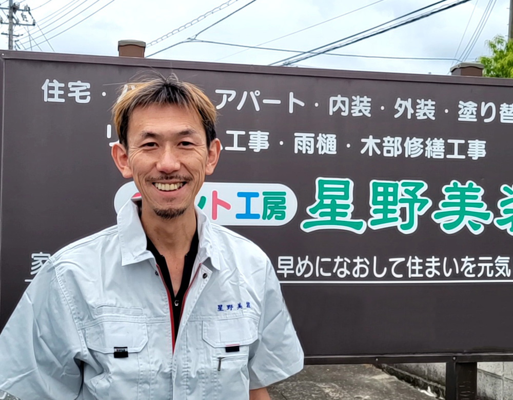
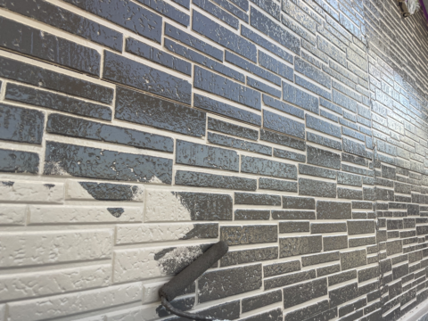
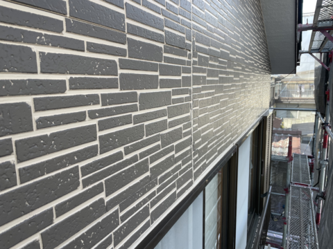
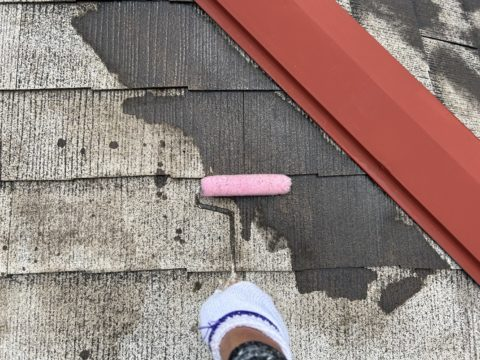
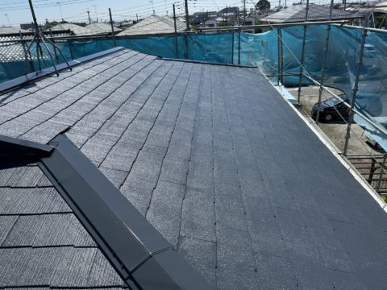
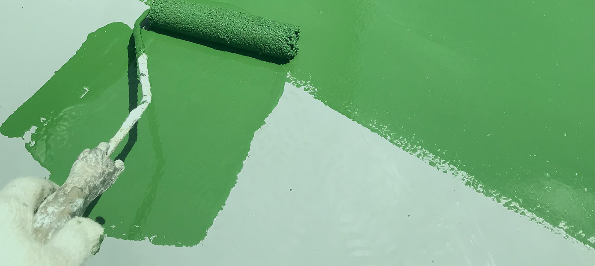

SERVICE
高崎市の外壁塗装・屋根塗装
工事メニュー
外壁・屋根の塗り替えから、防水・コーキング・雨漏り調査・ひび割れの補修まで。どの工事も、1級建築塗装技能士の代表・星野が自ら手がけます。気になる症状から選んでください。

どの工事が必要か、わからなくても大丈夫です。
無料の現地調査で、代表の星野が建物の状態を確かめ、必要な工事だけをご提案します。



MENU 01
外壁塗装
こんな症状に
- 色あせ
- さわると白い粉がつく
- 前回の塗装から10年以上
- カビ・コケ
外壁塗装の寿命の目安は10〜15年。塗膜が弱ると、雨や紫外線から壁を守る力が落ちていきます。星野美装では、塗る前の下地処理にいちばん時間をかけ、下塗り・中塗り・上塗りの3回塗りで仕上げます。塗料はウレタン・シリコン・フッ素・無機の4種からお選びいただけます。
費用の目安（30坪・足場込み）
55〜120万円
MENU 02
屋根塗装
こんな症状に
- 屋根の色あせ
- コケ・汚れ
- 外壁と一緒に直したい
屋根は、家の中でいちばん日差しと雨を受ける場所です。ふだん目に入らないぶん、気づいたときには傷みが進んでいることも。外壁と同じく、下地を整えてから3回塗りで仕上げます。外壁と一緒に塗れば、足場を一度で済ませられます。
費用の目安（外壁とセットの場合）
＋20〜35万円


MENU 03
吹付塗装
こんな症状に
- ザラザラ・凹凸のある外壁
- 模様を生かしたい
モルタル外壁などの凹凸のある仕上げは、吹付で塗り替えることができます。壁の状態と今の模様を見たうえで、ローラーと吹付のどちらが合うかをご提案します。
MENU 04
コーキング（シーリング）打ち替え
こんな症状に
- 目地のひび・すき間
- コーキングがやせている
- サイディングの外壁
サイディング外壁のつなぎ目や窓まわりを埋めているのがコーキングです。ここが切れると、すき間から雨水が入りこみます。古いコーキングを取り除き、新しく打ち替えてから塗装することで、塗装の持ちも変わってきます。


MENU 05
防水工事（ベランダ・屋上）
こんな症状に
- ベランダの床のひび
- 水たまりができる
- 下の部屋の天井にしみ
ベランダや屋上の床は、雨水を受け止めて流す場所。防水の層が傷むと、下の部屋への雨漏りにつながります。下地を整えてから防水層をつくり直し、雨の入り口をふさぎます。


MENU 07
ひび割れ補修・補強
こんな症状に
- 外壁・基礎のひび
- コンクリートの補強
- 耐震が気になる
ひび割れに補修材を注入するクラック注入のほか、炭素繊維シートによる補強、耐震補強にも対応しています。塗装の前に直しておくべきひびか、塗装で十分なひびかを見きわめてお伝えします。
MENU 08
そのほかの工事
戸建て住宅のほか、アパートや工場の機械塗装も手がけています。「こんなことも頼める？」というご相談も、お気軽にどうぞ。


FAQ
工事についてのよくある質問
Q外壁と屋根は一緒に塗ったほうがいいですか？
足場を一度で済ませられるため、時期が近ければ一緒に行うのがおすすめです。状態を見て、別々がよい場合はそうお伝えします。
Qどの工事が必要かわかりません。
無料の現地調査で、代表の星野が建物の状態を確かめ、必要な工事だけをご提案します。
Qアパートや工場の塗装もお願いできますか？
はい。戸建てのほか、アパートや工場の機械塗装も手がけています。
Q雨漏りの原因がわからなくても相談できますか？
はい。雨漏り調査・建物劣化調査で原因を探り、必要な補修をご提案します。